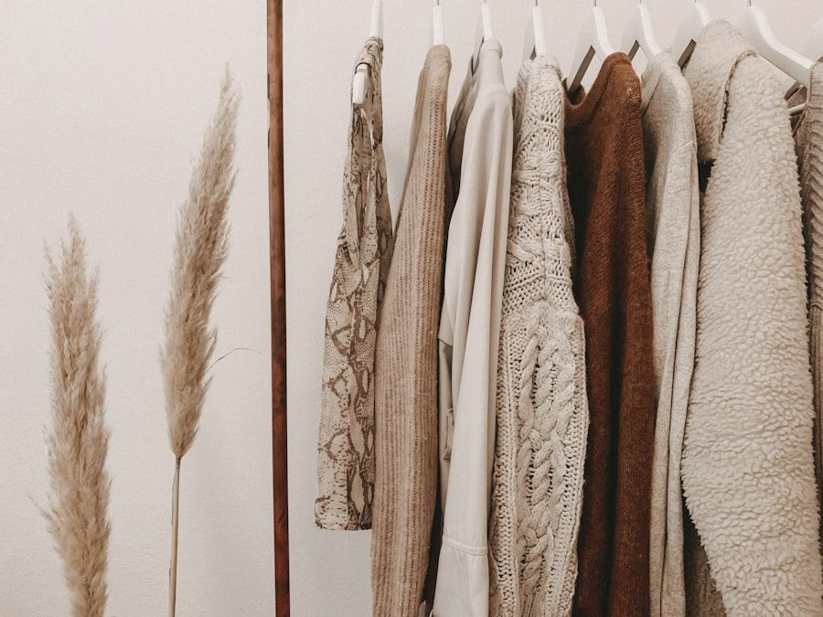

The Thermodynamics of Physical Vapor Deposition on Organic Substrates
The fusion of precious metals with natural organic calfskin has historically stood as one of the most formidable chemical challenges in haute maroquinerie. Conventional commercial fashion accessories achieve metallic effects through coarse plastic foils—typically polyester sheets coated with aluminum pigment and glued to split leather using thick polyurethane adhesives. While inexpensive to mass-produce, these commercial laminates suffocate the leather, destroying its natural breathability and causing catastrophic peeling, delamination, and crackling along flex points within a few months of active carry. In stark contrast, authentic haute maroquinerie requires a molecular bond that respects the biological architecture of the hide.
At MetallicTote, our tanneries in the Arno Valley achieve true metallic permanence through high-vacuum physical vapor deposition (PVD). Inside an ultra-high vacuum chamber evacuated to pressures below 10^-5 millibars, solid 24-karat gold or high-purity palladium ingots are bombarded with electron beams, vaporizing into a radiant plasma of ionized metal atoms. The full-grain calfskin substrate, pre-conditioned to an exact 12% moisture equilibrium, is conveyed slowly through the vacuum envelope. As the metallic vapor condenses onto the leather, individual metal atoms penetrate into the microscopic spaces between surface collagen fibrils, establishing an unbreakable mechanical and electrostatic bond measuring just eighteen to twenty-four microns in thickness.

Comparative Analysis: Vacuum PVD Metallization vs. Commercial Adhesive Foil
The table below details the structural, physical, and thermodynamic discrepancies between vacuum physical vapor deposition on full-grain calfskin and mass-market commercial adhesive foil lamination.
| Evaluation Metric | Vacuum PVD Metallization (MetallicTote) | Commercial Adhesive Foil Lamination | Artisanal Significance |
|---|---|---|---|
| Membrane Caliper | 18 – 24 Microns (Molecular Deposition) | 80 – 140 Microns (Plastic Film Layer) | Ultra-thin membrane preserves natural hide suppleness |
| Adhesion Chemistry | Inter-fibrillar mechanical & electrostatic bond | Polyurethane thermoplastic contact glue | Zero blistering, peeling, or delamination over time |
| Vapour Permeability | High (Natural collagen breathing retained) | Zero (Impermeable plastic barrier) | Prevents leather moisture rot and dry-cracking |
| Veslic Rub-Fastness | > 20,000 Dry Cycles without loss | < 3,500 Cycles before metallic wear | Exceptional abrasion resistance for daily luxury carry |
| Patina Trajectory | Softens into luminous micro-crinkle luster | Hard cracks, peels in sheets, dulls quickly | Heirloom aging characteristics vs. disposable degradation |
Collagen Fiber Elasticity and Micro-Crinkle Patina Dynamics
Because our vacuum-deposited metallic membrane measures fewer than twenty-five microns in depth, it does not form a rigid, unyielding crust across the hide. Instead, it behaves as a ductile metallic skin that expands, contracts, and breathes in perfect harmony with the underlying dermal collagen bundles. When an artisan flexes the leather along an intentional pleat or gusset, the metallic membrane accommodates the deformation without fracturing or releasing its grip on the grain.
Over years of dedicated ownership, this molecular flexibility gives rise to the celebrated 'micro-crinkle patina' unique to authentic metallic leathers. As the leather softens and conforms to the patron's daily carry habits, microscopic flex lines emerge across the surface, scattering light at subtle angles and imbuing the bag with a rich, burnished vintage luster. Far from representing wear or degradation, this evolving metallic patina is the unmistakable hallmark of genuine full-grain leather living alongside its owner.

Environmental Resistance, Rub-Fastness, and Care Protocols
To safeguard the micro-thin gold or palladium layer against atmospheric oxidation and everyday frictional wear, our tanneries apply a proprietary water-borne micro-polymer sealant derived from natural plant resins. This invisible finishing shield provides exceptional dry and wet rub-fastness, exceeding twenty thousand cycles on the standard Veslic abrasion test without loss of metallic brilliance. The sealant is non-occlusive, ensuring that the natural calfskin retains its signature buttery hand-feel and distinctive organic fragrance.
For the luxury collector, maintaining a vacuum-metallized tote requires minimal yet deliberate attention. Routine maintenance involves gentle wiping with an ultra-soft, untreated microfiber jeweler's cloth to remove surface dust and skin oils. Chemical cleaning agents, saddle soaps containing petroleum distillates, and abrasive leather creams must be strictly avoided, as aggressive solvents can compromise the organic top sealant. With thoughtful preventative care, a vacuum-metallized tote bag remains an heirloom asset of radiant beauty for generations.
Spectrophotometric Reflectivity and Angular Light Dispersion
In the evaluation of luxury metallic finishes, surface gloss is only one component of perceived aesthetic prestige. In our testing laboratory, we utilize multi-angle spectrophotometers to quantify the bidirectional reflectance distribution function (BRDF) of our 24K gold vacuum-metallized hides. Unlike synthetic metallic films that exhibit harsh, specular mirror spikes that can appear plastic and artificial, vacuum-metallized full-grain calfskin scatters light across a broad, Gaussian chromatic arc.
This subtle, diffuse scattering occurs because the microscopic metal vapor follows the natural undulating topography of the epidermal grain. Light entering the metallic layer interacts with the natural cellular structure of the dermis, reflecting outward with a warm, ambient luminosity that mirrors the visual behavior of molten precious metal. When carried beneath ambient twilight or evening candlelight, the tote shifts dynamically from an understated golden warmth to an authoritative, radiant glow.
Atmospheric Chamber Testing and Accelerated Oxidation Trials
To ensure that our metallic finishes maintain their structural integrity across extreme global climates—from the humid maritime air of Hong Kong to the arid, sun-drenched avenues of Dubai—all sample swatches undergo rigorous environmental testing inside our accelerated climate simulation chambers. Hides are exposed to cyclic forty-eight-hour intervals of 95% relative humidity at 40°C, alternating with concentrated ultraviolet (UV-A and UV-B) radiation bursts.
Post-exposure colorimetric assays confirm that our proprietary water-borne organic sealant prevents gold ionization and sulfur tarnishing, showing zero measurable delta-E color shift after five hundred continuous hours of exposure. For the international collector, this rigorous testing guarantees that a MetallicTote piece withstands cross-continental voyages while preserving its pristine brilliance without premature dulling or oxidation.
Atelier Inquiries & Bespoke Consultation
Experience the tactile depth of our vacuum-metallized Tuscan leathers firsthand. Connect with our Milanese concierge to request personalized leather swatches or initiate an individual bespoke commission.
Connect with Atelier Concierge